Anzüge
Standard-Feldanzug (Innen- & Unteranzug)
Verwendung: Habitatbetrieb · Appelle · Technikbereiche · Unteranzug für Ausseneinsätze
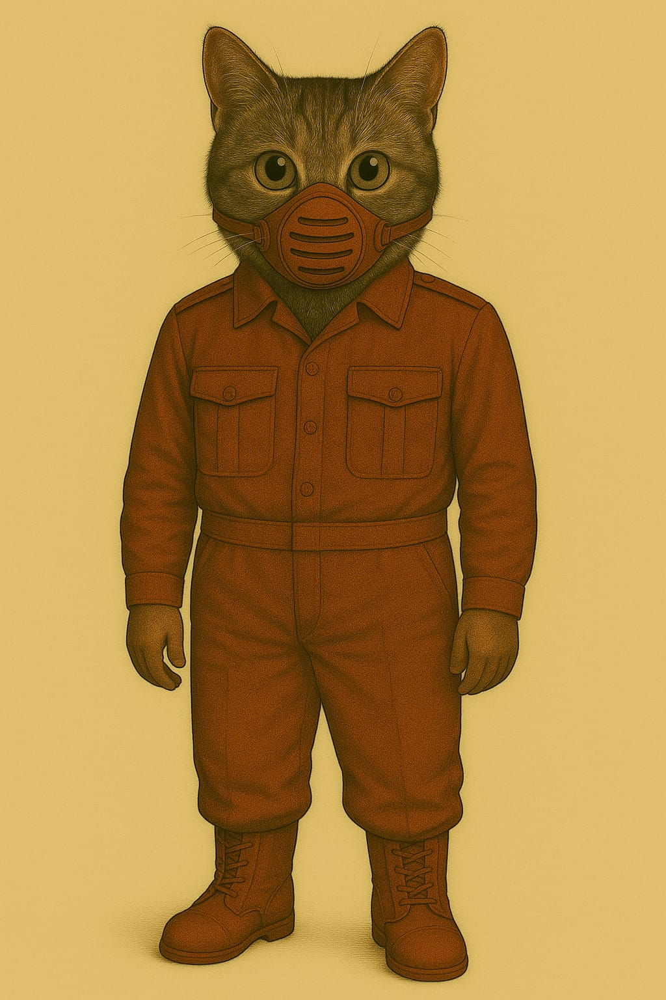
🧰 Funktionaler Überblick
Der Standard-Feldanzug ist ein einheitlich gefertigtes Bekleidungsstück für den täglichen Einsatz auf dem Mars. Er dient primär als Innenraum-Uniform für alle Aufgaben innerhalb von Habitaten und Stationen – inklusive Verwaltung, Technik, Medizin, Versorgung oder Sicherheit. Gleichzeitig ist er als Unteranzug für längere Ausseneinsätze vorgesehen: Er wird direkt unter einem externen Schutzanzug (z. B. Raumanzug, Exo-Einsatzsystem) getragen und bietet dafür ideale Kompatibilität.
🧥 Oberteil – Uniformjacke
- Farbe: Dunkel-terrakottafarbener Ton – erkennbar, traditionsbewusst, schmutzunempfindlich.
- Material: Hochreissfestes, atmungsaktives Mischgewebe mit Staubschutzbeschichtung und guter Thermoisolierung.
- Ausstattung:
- Front: durchgehende Knopfleiste mit flachen Druckknöpfen (auch unter Exoanzügen nicht störend).
- Kragen: klassisch, flachliegend – vorbereitet für Kragenfilter, Innenhelmeinlass oder Kommunikationsaufsatz.
- Taschen: Zwei Brusttaschen mit Patten – flach gehalten, um unter Anzügen nicht aufzutragen.
- Schultern: mit interner Verstärkung zur Druckverteilung bei Tragesystemen oder Rucksackmodulen.
👖 Unterteil – Hose
- Schnitt: Körpernah, aber bewegungsfreundlich. Beine verjüngt, Abschluss für Stiefeloptimierung.
- Details:
- Seitliche Eingrifftaschen.
- Verstärkte Knie- und Gesässbereiche (besonders nützlich beim Kriechen oder langen Tragen).
- Gürtelbereich: kompatibel mit Innenriemen oder Versorgungsverkabelung.
- Anwendung: Die Hose kann dauerhaft getragen und einfach in einen Aussenschutz integriert werden (kein Umziehen notwendig).
🥾 Stiefel
- Modell: Mars-Innenstiefel, robust und komfortabel.
- Funktion: Ausgelegt für Alltag und kurzzeitigen Ausseneinsatz.
- Merkmale:
- Weicher Schaftabschluss zum Andocken von Aussengamaschen oder Anzugabdichtungen.
- Rutschhemmend, hitzebeständig.
- Schnellschnürung für schnelles An- und Ausziehen in Luftschleusen.
😷 Leichtatmer (L-F1-Serie)
- Typ: Halbmaske mit Basisstaubfilter.
- Funktion: Schutz bei reduzierter Filterleistung im Inneren, leichten Leckagen oder auf kurzen Aussenwegen.
- Design: Elastische Bänder, flaches Filterprofil, kompatibel mit der leichten Schutzkappe oder dem Pilotenhelm-System.
- Besonderheit: Kann im Aussenbereich weitergetragen werden, wenn der externe Helm abgenommen wird (z. B. zur Wartung oder Erholung).
🔧 Modularität & Schichtung
- Innentragung: Unter Exo-, Raum- oder Versorgungsanzügen.
- Schichtkonzept:
- Unterwäsche (technisch oder leicht isolierend)
- Feldanzug (dieses Modell)
- Aussensystem (Anzug, Versorgung, Schutz)
- Der Feldanzug ist so gefertigt, dass er weder scheuert noch staut, auch bei stundenlangem Tragen unter Druckanzügen. Schweiss wird nach aussen geleitet, Druckstellen werden durch den Schnitt vermieden. Die Oberfläche reduziert Reibung zu Aussenanzügen.
Kadett
📄 Kadettenausseneinsatzsystem – Typ CLx-01
- 🏷️ Gebrauchsbezeichnung: Anzug CLx-01
- 🗣️ Spitzname in der Truppe: Kadettenpellwurst
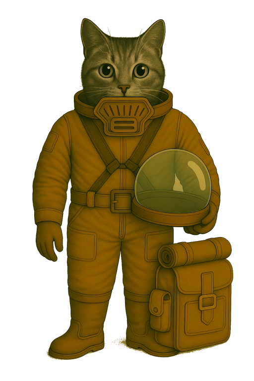 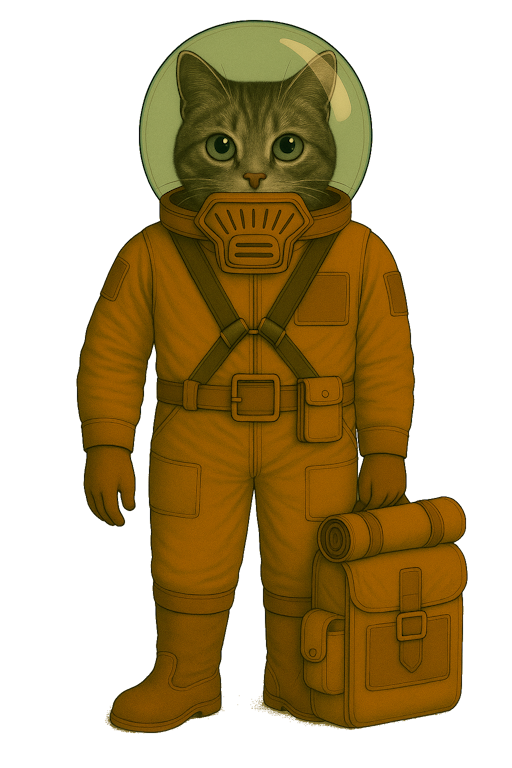 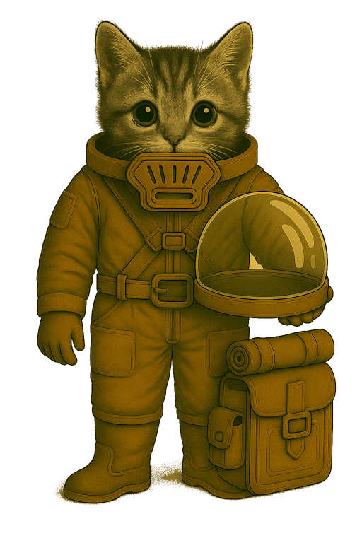
🧾 Ausrüstungseintrag
| 🆔 Artikel-ID | Bemerkung |
|---|---|
| CLA-1000001 | Kadetten · Kleidung · Ausseneinsatzanzug |
| CLS-1000501 | Kadetten · Kleidung · Stiefel |
| CLH-1000301 | Kadetten · Kleidung · Helm |
| UAX-6010101IR | Universal · Atemsystem · Filtermodul; IN-kompatibel, regenerierbar |
🎯 Verwendung
- Ausseneinsätze im Ausbildungsrahmen
- Technische Schulungen, Kartenübungen
- Orientierungsläufe unter Aufsicht
- Schleusennahe Reparaturen oder Kontrollgänge
- Einsätze bis ca. 10 Stunden Betriebsdauer mit einer Standardkassette Typ S
📄 Allgemeines
Der Ausseneinsatzanzug CLx-01 ist das standardisierte Ausbildungsmodell für Mars-Kadetten bei leichten Ausseneinsätzen unter kontrollierten Bedingungen. Er bietet Basisschutz bei Bewegungsübungen, technischen Schulungen und Schleusengängen und ist vollständig modular aufgebaut. Das System kommt ohne komplexe Lebenserhaltung aus, bleibt aber filter- und helmkompatibel mit den regulären Schnittstellen der Bodentruppen.
📄 Anzug
🛠️ Material und Aufbau
- Anzug (CLA-1000001)
- Gewebematerial:
- PMK-2 – PolyMars-Kadett®
- Schutzklasse: 1–2 · rotationsfähig · nicht schnittfest
Eigenschaften
- Abriebfest
- Thermoregulierend
- Staubabweisend
- Farbgebung: einfarbig Mars-Terrakotta (staubreduzierend, dienstlich genormt)
Konstruktionsmerkmale
- Dreilagiger Aufbau mit leichtem Kreuzgurtsystem
- Superhaft-Zonen zur Anbringung von Ausrüstungsmodulen
- Nottrennvorrichtung für Gürtel
- Integriertes Filtersystem mit folgenden Merkmalen:
- Integriertes Filtermodul im Helmkragen zur Aufnahme der Standardkassette Typ S (UAX-6010101IR)
- IN-kompatibel · systemübergreifend einsetzbar bei allen Nicht-Elite-Systemen
Stiefel (CLS-1000501)
- Material: STX-K1 – StepTex-Kadett®
- Schutzklasse: 1–2 · Flexibilität: mittel · Profilhaftung: gering
Eigenschaften
- Halbhoch
- Gelenkschutz integriert
- Antistatische Sohle
- Geeignet für Schleusen, Habitat- und Übungsbetrieb
Helm (CLH-1000301)
- Kuppel: VSL-2 – VisLite-PolyShield® (einteiliger Vollhelm)
- Schutzklasse: 2
Eigenschaften
- Einteilige Klarsichtkuppel aus splitterhemmendem VSL-2 PolyShield®
- Vollhelm ohne separates Visier – komplett geschlossenes Sichtsystem
- Passiv druckausgleichend, jedoch nicht vakuumtauglich
- Helmkuppel vollständig abnehmbar, mit seitlichen Riegeln gesichert
- Stossresistenter Helmbasisring mit Anschluss an Filtereinheit
- Kein integriertes Funk- oder Sensorsystem
- Innenfassung mit verstellbaren Trägern und weicher Komfortpolsterung
- Speziell für den Ausbildungsbetrieb unter Marsbedingungen konzipiert
📡 Einsatzprofil
Geeignet für:
- Bewegungstrainings ausserhalb der Station
- Wartungsaufgaben unter Anleitung
- Ausbildung in Schleusennähe
- Orientierungsübungen mit begrenzter Reichweite
Nicht empfohlen für:
- Vakuum, toxische oder offene Gefahrzonen
- Einsätze mit Funk- oder Sensoranforderungen
- Taktische oder interaktive Gefechtsübungen
🔍 Besonderheiten
- Seriennummernregistrierung aller Hauptkomponenten
- Keine persönliche Grundausstattung – Zuteilung durch Materialstelle
- Modular aufrüstbar (z. B. Lichtquelle, Kartenhalter)
- Nicht funktionsfähig für IN oder sensorische Kopplung
- Verwendung nur nach Freigabe durch Ausbilder oder Stationsleitung
- Kompatibel mit Standard-Filtersystem Typ S (UAX-6010101IR)
📡 Kommunikationssystem – Externes Kadetten-Funkmodul "K-Radio/01"
Verwendungszweck: Gruppenkommunikation bei Ausbildungsexpeditionen · Verbindung zur Aufsicht
🔧 Technische Umsetzung
Im Kadettenbetrieb wird aus Kostengründen auf integrierte Helmfunktechnik verzichtet. Stattdessen kommt das einfache Funkmodul "K-Radio/01" zum Einsatz.

- Anbringung: Das Funkmodul wird per Klett- oder Cliphalterung direkt am Anzug befestigt, meist im Brustbereich.
- Verbindung:
- Es ist über ein Kabel mit Stecker mit der Funkkiste FK-2M verbunden, die als zentrales Gruppenfunkgerät dient und von zwei Kadetten gemeinsam getragen werden muss.
- In seltenen Ausnahmefällen wird stattdessen ein kompaktes Kleinfunksystem der regulären Truppen eingesetzt. Diese Geräte sind hochwertiger, aber im Kadettendienst nicht vorgesehen.
- Lautsprecher:
- Aussen am Helm montiert
- Überträgt Sprache indirekt über die Luft im Helm
- Führt zu dumpfer oder verzerrter Wiedergabe
- Mikrofon:
- Direkt am Filtermodul befestigt
- Sprache wird oft gedämpft durch Atemgeräusche und Filterrauschen
📉 Praktische Einschränkungen
Die Kombination aus Aussenlautsprecher, Filtermikrofon und grossem Helmvolumen führt häufig zu:
- undeutlicher Kommunikation
- verzögerter Reaktion
- Missverständnissen bei Anweisungen
Die Ausbildung setzt daher stark auf visuelle Signale, Blickkontakt und standardisierte Gesten.
Kadettenanzug "Typ K-1R"
Verwendung: Ausseneinsätze · Geländeübungen · Ausbildungsexpeditionen auf der Marsoberfläche


🧰 Allgemeines
Der Kadettenanzug "Typ K-1R" ist ein leichter Ausseneinsatzanzug für Nachwuchspersonal und Schulungseinsätze ausserhalb der Stationen. Er schützt zuverlässig vor Staub, UV-Strahlung, Kälte und dünner Atmosphäre – bei hoher Bewegungsfreiheit und robuster Konstruktion. Der Anzug ist für angeleitete Expeditionen unter Normaldruckbedingungen konzipiert und entspricht den kolonialen Sicherheitsstandards für Kadettenausbildung.
👕 Anzug (Ganzkörper-System)
- Aufbau: Einteiliger, versiegelter Ausseneinsatzanzug mit zentralem Reissverschluss, Isolierkern und Kreuzgurtsystem
- Material: Dreilagige Mars-Polyfaser mit Staubschutzoberfläche und temperaturregulierender Innenstruktur
- Tragesystem:
- Brustgurtführung zur Helmbefestigung
- Breiter Gürtel mit Nottrennverschluss
- Befestigungszonen:
- Keine Taschen
- Stattdessen Superhaft-Klettzonen an Oberschenkeln, Unterarmen und Gürtelbereich
- Zur Aufnahme von externen Ausrüstungsmodulen, wie Werkzeughalterungen, Lichtquellen oder Kartenträgern
🥾 Stiefel
- Typ: Halbhohe Aussendienststiefel
- Versiegelt, isoliert und antistatisch
- Flexgelenke zur Unterstützung langer Märsche
- Staubresistent und trittsicher auf losem Gelände
Atemschutz – Standardfiltersystem
- System:
- Kein Leichtatmer-Modul
- Standardisierter Frontanschluss für Filtrationskassetten
- Kompatibel mit Kolonie-Kassetten Typ S (Feinstaub, Gas, Partikel)
- Sichtbare Filteraufnahme mit modularer Einschuböffnung
- Wartung:
- Kassette werkzeuglos wechselbar
- Einsatzdauer je nach Belastung 4–8 Stunden
Helm (abnehmbar)
- Typ: Kuppelhelm mit mechanischer Verriegelung
- Schutz gegen Partikel, Lichtreflexion und Unterdruck
- Aufsetzbar über Bajonettverschluss
- Kein Funk integriert – nur passive Helmform
🎒 Zusätzliche Ausrüstung
- Rückensystem:
- Leichter Ausrüstungsbehälter mit Rollmatte
- Modulaufnahme für Trinksystem, Nordweiser, Ersatzkassette
- Gurtmontage mit Fixierungspunkten
📡 Einsatzprofil
- Zielgruppe: Kadetten in technischer oder operativer Ausbildung
- Verwendung:
- Geführte Expeditionen auf der Marsoberfläche
- Ausbildung im realen Aussenumfeld (z. B. Sensorwartung, Topografie, Navigation)
- Wartungsbegleitung, Orientierungsübungen
- Einschränkungen:
- Nicht vakuumdicht
- Kein integrierter Funk
- Nur mit zugelassener Filterkassette verwendbar
- Einsatz nur unter Aufsicht und mit Rückkehrfenster
Piloten-Anzug - mit Kommunikationssystem
🔖 AUSRÜSTUNG: Piloten-Kommunikationssystem
- Anzug: A-P-x-x-3.1
- Helm: H-P-N-x-1.1
- Leichtatmer: L-P-M-H-1.2
- Kennziffer: FLD-A3K-001
- Einsatzbereich: Flugdienst – Kolonialtransporte – Kontrollflüge
- Ausgabestatus: Standardausstattung für registriertes Flugpersonal (aktive Staffel & Reserve)
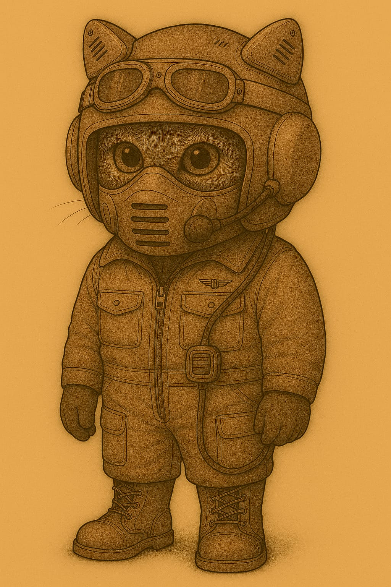

🔧 Technische Kurzbeschreibung
Das Piloten-Kommunikationssystem besteht aus einem modularen Fluganzug (Typ A-P-x-x-3.1), einem felinisch angepassten IN-Helm (Typ H-P-N-x-1.1) und einem helmgetragenen Leichtatmer mit Mikrofonmodul (Typ L-P-M-H-1.2). Es ermöglicht die sichere Teilnahme an kolonialen Raumflugoperationen im atmosphärisch abgeschirmten Bereich – mit Bordfunkintegration und anatomischer Kompatibilität für felinische Nutzer.
📡 Einsatzprofil & Einschränkungen
Verwendung vorgesehen für:
- Start- und Landeoperationen
- Kontrollflüge innerhalb von Atmosphärenkuppeln
- Koloniale Versorgungseinsätze
- Kurzzeitige Ausseneinsätze mit Leichtatmer L-P-M-H-1.2
Nicht geeignet für:
- Langzeitexposition ohne atmosphärische Abschirmung
- Einsätze mit eigenständiger Funkübertragung
- Hochvakuumzonen ohne druckkompensierende Systeme
🛠 Spezialmerkmale
- Kommunikationsweg ausschliesslich über gekoppelten Bordfunk
- Helmlautsprecher optimiert für felinisches Gehör
- Mikrofonmodul direkt im Filterelement integriert
- Kompatibilität mit:
- Cockpits der Serien T-12 bis T-44
- Gurtsystem „Kragensicher – 3-Punkt“
- Cockpitprotokoll „V-Mars 7“
📎 Hinweise zur Verwendung
- Helmsitz auf Dichtigkeit prüfen
- Mikrofonmodul nach Filterwechsel testen
- Funkverbindung vor Einsatzflug über Bordprotokoll initialisieren
- Keine Verwendung ausserhalb atmosphärischer Zonen
🗂 Eintrag geprüft & freigegeben durch:
- Abteilung für Flugdienststandardisierung – OKKT (Oberkommando Kolonialtechnik)
- etzte Überarbeitung: [Datum eintragen]
- tatus: aktiv – Ausgabe erfolgt zentral über Staffelversorgung
👕 Anzug A-P-x-x-3.1
- Einteiler mit Reissverschlussfront und verstärkten Nähten
- Material: Mars-PolyFas (atmungsaktiv, staubgeschützt)
- Ausrüstungspunkte:
- 2 Brusttaschen mit Patte
- 2 Oberschenkeltaschen mit Reissverschluss
- 1 Oberarmtasche (links)
- Brustabzeichen „Flugdienst“
- Farbe: Flugdienst-Standard rostbraun
Helm H-P-N-x-1.1 (Modifizierter IN-Helm)
- Konstruktion gemäss Interstellarer Norm (IN), angepasst für felinische Kopfgeometrie
- Lautsprechereinheiten oberhalb des Helmzentrums (felinische Ohrenposition)
- Keine internen Sendeeinheiten – reines Empfangssystem
- Seitenpolster ohne Technik – dienen der Stabilisierung
- Funkverbindung ausschliesslich über externe Quelle (z. B. Bordfunkgerät)
😷 Leichtatmer L-P-M-H-1.2
- Kompaktsystem, direkt am Helm befestigt
- Integriertes Mikrofonmodul mit Rauschunterdrückung
- Direkte Verbindung zum Bordkommunikationssystem (keine Kabelverlegung notwendig)
- Dreifach-Belüftung, Dichtsitz unter dem Helmrand
- Wartungsfreundliche Filtereinheit
🥾 Stiefel (Flugeinsatzmodell)
- Staubabweisend, antistatisch
- Flaches Schnürsystem für Gurtsystemkompatibilität
- Profilsohle für optimalen Halt in Steuerpedalen
Kadett Standard

Feldanzug Mars ULx-03
📄 Feldanzug Mars ULx-03
🧾 Ausrüstungseintrag
📘 Artikel
| Artikel-ID | Bemerkung |
|---|---|
| ULF-6000203 | Universal · Kleidung · Feldbluse |
| ULT-6000103 | Universal · Kleidung · Hose |
| ULS-6000503 | Universal · Kleidung · Stiefel |
| UAL-6000003I | Universal · Atemsystem · Leichtatmer, IIN-kompatibel |
- 🏷️ Gebrauchsbezeichnung: Feldanzug Mars ULx-03
- 🗣️ Spitzname in der Truppe: Stubenhocker
Verwendung
- Universale Dienstkleidung für Habitatstationen
- Schulungseinsätze, Ausbildung, Kadettenbetrieb
- Ausseneinsätze bedingt ohne Zusatzschutz oder Raumanzug
- Trägerschicht für Ausseneinsatzanzüge GLx/CLx
- Technischer Dienst, Lagerlogistik, Kontrollgänge
📡 Einsatzprofil
Geeignet für:
- Habitatbetrieb, Schleusen, Technikbereiche
- Ausbildung, Logistik, Kurzzeiteinsätze
- Trägerschicht unter Ausseneinsatzanzügen (z. B. CLx-01 / GLx-03P / GLx-04P)
Nicht empfohlen für:
- Hochbelastete Aussenzonen ohne weiteren Schutz
- Vakuum, kontaminierte Zonen
- Taktische oder Langzeitoperationen
🔍 Besonderheiten
- Seriennummernregistrierung je Teil
- Persönliche Grundausstattung: 3 Anzüge, 2 Stiefelpaare, 1 Leichtatmer mit 2 Filtern
- Kompatibel mit IN-Filtersystem
- Farbgebung reduziert Staubanhaftung
- Bestandsführung über zentrale Materialausgabe
📄 Allgemeines
Der ULx-03 ist ein modular aufgebautes Bekleidungssystem für den marsianischen Habitatbetrieb sowie vorbereitende Ausseneinsätze. Er wird von sämtlichen Truppenteilen genutzt – besonders von Kadetten, technischen Einheiten, Wartungspersonal und Stationsdiensten. Das System ist rotationsfähig, kombinierbar mit Atem- und Schutzsystemen und dient häufig als Unterkleidung für Ausseneinsatzanzüge.
🛠️ Material und Aufbau
Feldbluse (ULF-6000203)
- Gewebematerial: FLX-55 – FlexLight-Standard®
- Schutzklasse: 2–3 · rotationsfähig · nicht schnittfest
Eigenschaften
- Atmungsaktiv
- Staubabweisend
- Marsstaubkompatibel
- Farbgebung: einfarbig Mars-Terrakotta (staubreduzierend, dienstlich genormt)
Konstruktionsmerkmale
- Flachkragen mit Druckknopfleiste
- Brusttaschen mit Klappe
- Leicht elastische Schnittführung
Hose (ULT-6000103)
- Gewebematerial: FLX-55 – FlexLight-Standard®
- Schutzklasse: 2–3 · rotationsfähig · nicht schnittfest
Eigenschaften
- Elastisch
- Langlebig
- Marsstaubresistent
- Farbgebung: einfarbig Mars-Terrakotta (dienstlich genormt)
Konstruktionsmerkmale
- Verstärkte Nähte an Belastungspunkten
- Elastischer Hosenbund
- Seitentaschen mit Patte
Stiefel (ULS-6000503)
- Material: STX-55 – StepTex-Standard®
- Schutzklasse: 2–3 · Flexibilität: gut · Profilhaftung: hoch
Eigenschaften
- Schleusentauglich
- Rutschhemmende Anti-Staub-Sohle
- Hoher Tragekomfort durch elastischen Schaft
Konstruktionsmerkmale
- Polymerüberzug im unteren Bereich
- Schnellschnürsystem mit Riegelsicherung
- Halbhoch mit Knöchelunterstützung
Leichtatmer (UAL-6000003I)
- Kategorisierung: Universal · Atemsystem · Leichtatmer – Modell 6000003I – IN-kompatibel
- Artikel-ID: UAL-6000003I
Eigenschaften
- Halbmaskiger Leichtatmer mit Bajonett-Aufnahme
- Trageweise: Kopfgetragen mit Nackenband und Ohrenverankerung
- Material: Polymergehäuse mit Rückschlagventil
- Anschluss: kompatibel mit austauschbarem Filtermodul UAX-6010111IR
- Kompatibilität: Raumanzughelme, Kadettenanzüge, Habitatdienst
- Farbgebung: Dunkles Mars-Rotbraun, matt lackiert (an Anzugsfarbton angepasst)
Soldaten-Anzug mit Kommunikation-Einheit
Kopfhörer aussen am Helm und ein Mikrofon das magnetisch von aussen am Filter befestigt wird.


Bodentruppen
Ausseneinsatzanzug der Bodentruppen – Typ GLx-03P
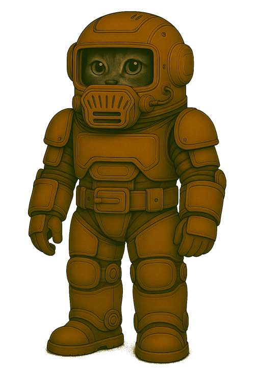 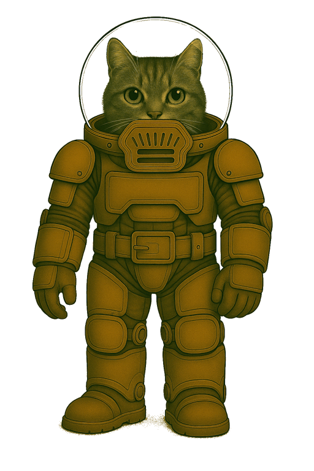
🧾 Ausrüstungseintrag
| Artikel-ID | Bemerkung |
|---|---|
| GLA-2000003P | Bodentruppen · Kleidung · Ausseneinsatzanzug, gepanzert |
| GLS-2000502 | Bodentruppen · Kleidung · Stiefel |
| GLH-2000303C | Bodentruppen · Kleidung · Helm, Kommunikation integriert |
| UAX-6010101IR | Universal · Atemsystem · Filtermodul, IN-kompatibel, regenerierbar |
🏷️ Gebrauchsbezeichnung: Anzug GLx-03P 🗣️ Spitzname in der Truppe: PR03 (Platten-Rüstung)
🎯 Verwendung
- Ausseneinsätze unter mittleren Belastungsbedingungen
- Kontrollgänge, Stationssicherung, Materialtransport
- Ausbildungsbetrieb mit Bewegungsschwerpunkt
- Einsätze bis ca. 10 Stunden Betriebsdauer mit einer Standardkassette Typ S
📄 Allgemeines
Der Ausseneinsatzanzug GLx-03P die gepanzerte Standardkonfiguration der regulären Bodentruppen. Er wurde für felinische Träger entwickelt, ist nicht IN-kompatibel, bietet aber hohe Bewegungsfreiheit, kombinierte Schutzwirkung und modulare Anschlussstellen. Der GLx-03P befindet sich weiterhin im aktiven Truppeneinsatz und ist rückwärtskompatibel zu älteren Modulen.
Der GLx-03P wird derzeit nach und nach durch den verbesserten Nachfolger GLx-04P in der Truppe ersetzt.
🛠️ Material und Aufbau
Anzug (GLA-2000003P)
Gewebematerial: PMF-55 – PolyMars-Flex® Schutzklasse: 2–3 · rotationsfähig · plattenträgerkompatibel Eigenschaften:
- Thermoausgleichend
- Innenfutter stossdämpfend, druckverteilend, atmungsaktiv
- Aussenschicht: scheuerresistent, staubabweisend, leicht elastisch Farbgebung: einfarbig Mars-Terrakotta (staubreduzierend, dienstlich genormt)
Konstruktionsmerkmale:
- Zweiteiliger Aufbau mit rotationsfähigem Bajonettverschluss
- Kreisdrehgelenk im Taillenbereich, abgedeckt durch taktischen Gürtel
- Belastungszonen elastisch gedämpft
- Verwendung mit Helm GLH-2000303C über Standardanschluss
- Notverwendung mit Kadettenhelm CLH-1000301 möglich – jedoch ohne Kommunikationsfähigkeit
- Integriertes Filtersystem mit folgenden Merkmalen: – Integriertes Filtermodul im Helmkragen zur Aufnahme der Standardkassette Typ S (UAX-6010101I) – IN-kompatibel · systemübergreifend einsetzbar bei allen Nicht-Elite-Systemen – Direkte Verbindung zur Kommunikationsschnittstelle des Anzugs – Werksseitig integriertes Mikrofonmodul mit Rauschunterdrückung – Schnellverschlusskappe mit mikrofonsichernder Führung, mit direktem Zugriff zum werkzeuglosen Austausch – Verbindung zum Truppenfunksystem über Standard-Klinke
Panzerung:
- PNT-4 – PlasTitan-Standard®
- Schutzklasse: 5 · stossverteilend · kugelhemmend · splitterschutzfähig
- Fest verbaut an: Brust, Rücken, Schultern, Oberschenkeln, Knien, Unterarmen
- Farbgebung: Mars-Terrakotta
- Wartung: Panzerplatten modular austauschbar durch Instandsetzung
Stiefel (GLS-2000502)
- Material: STX-55 – StepTex-Standard®
- Schutzklasse: 2–3 · Flexibilität: gut · Profilhaftung: hoch
- Halbhoch, mit Gelenkunterstützung
- Rutschhemmende Anti-Staub-Sohle
- robust
Helm (GLH-2000303C)
- Material: HSR-5 – HelmShell-Regular®
- Visier: SIL-7 – Silicorit-Sichtscheibe
- Schutzklasse: 4
- Kommunikation integriert (Suffix C
- Lautsprecher und PTT-Knopf extern im Anschlusskabel zum Funksystem integriert – Mikrofonanschluss erfolgt über Standard-Klinke am Filtermodul
- Belüftung überarbeitet, Innenpolsterung neu
- Kein HUD oder IN-System
Einsatzprofil
Geeignet für:
- Bewegungslastige Ausseneinsätze auf der Marsoberfläche
- Marsstationen, Patrouillen, Ausbildung unter Feldbedingungen
- Topografieeinsätze
- Ausbildungs- und Übungssituationen marsweit, auch mehrtägig
Nicht empfohlen für:
- Orbitaleinsätze, EVA, Hochrisikozonen
- Biologisch oder chemisch belastete Zonen
🔍 Besonderheiten
- Nicht IN-kompatibel (ausser Filterschnittstelle)
- Seriennummernregistrierung aller Hauptkomponenten
- Rückwärtskompatibel mit GLx-02P und Kadettenhelm CLH-1000301
- Modular aufrüstbar über Gurtträger und Schulterhalterungen
- UAX-6010101I: IN-kompatibel, mikrofonintegriert, nicht regenerierbar
- Vollständige taktische Integration mit Gurten, Packs und Kommunikationsausrüstung
📄 Ausrüstungsakte: Ausseneinsatzanzug der Bodentruppen – Typ GLx-04P
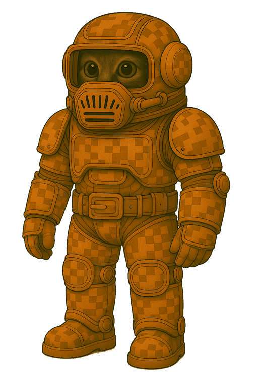
🧾 Ausrüstungseintrag
| Artikel-ID | Bemerkung |
|---|---|
| GLA-2000004P | Bodentruppen · Kleidung · Anzug, gepanzert |
| GLS-2000503 | Bodentruppen · Kleidung · Stiefel |
| GLH-2000304C | Bodentruppen · Kleidung · Helm, Kommunikation integriert |
| UAX-6010101IR | Universal · Atemsystem · Filtermodul, IN-kompatibel, regenerierbar |
- 🏷️ Gebrauchsbezeichnung: Anzug GLx-04P
- 🗣️ Spitzname in der Truppe: PR04 (Platten-Rüstung, Generation 4)
🎯 Verwendung
- Kontrollgänge, Stationssicherung, Materialtransport
- Langstrecken- und Patrouillenmissionen im Mars-Gelände
- Stationsschutz mit hoher Mobilität
- Technisch-taktische Aussendienste
- Ausbildungsbetrieb mit starker Belastung und Bewegungsschwerpunkt
- Einsätze bis ca. 10 Stunden Betriebsdauer mit einer Standardkassette Typ S
📄 Allgemeines
- Der Ausseneinsatzanzug GLx-04P ist die verstärkte Weiterentwicklung des GLx-03-Systems für die Bodentruppen.
- Er kombiniert verbesserte Beweglichkeit, höhere Schutzwirkung und moderne Tarnung mit standardisierten Modulschnittstellen.
- Der Anzug befindet sich aktuell in stufenweiser Einführung bei regulären Einheiten mit erhöhtem Gefahrenprofil.
📡 Einsatzprofil
Geeignet für:
- Bewegungslastige Ausseneinsätze auf der Marsoberfläche
- Marsstationen, Patrouillen, Ausbildung unter Feldbedingungen
- Topografieeinsätze
- Ausbildungs- und Übungssituationen marsweit, auch mehrtägig
Nicht empfohlen für:
- Orbitaleinsätze, EVA, Hochrisikozonen
- Biologisch oder chemisch belastete Zonen
🔍 Besonderheiten
- Nicht IN-kompatibel (ausser Filterschnittstelle)
- Seriennummernregistrierung aller Hauptkomponenten
- Modularzonen für Technik, Licht, Zusatzmodule
- Panzerung und Gewebe vollständig wartbar
- UAX-6010101I: IN-kompatibel, truppengruppenübergreifend nutzbar
- Rückwärtskompatibel bis zu GLx-02P Systemen und Kadettenhelm CLH-1000301
- Vollständige taktische Integration mit Gurten, Packs und Kommunikationsausrüstung
🛠️ Material und Aufbau
Anzug (GLA-2000004P)**
Gewebematerial:
PMF-56 – PolyMars-Flex+® Schutzklasse: 2–3 · rotationsfähig · plattenträgerkompatibel
Eigenschaften:
- Thermoausgleichend
- Innenfutter: stossdämpfend, druckverteilend, atmungsaktiv, elastisch, leicht
- Aussenschicht: erhöhte Haltbarkeit, scheuerresistent, staubabweisend, voll elastisch Farbgebung: Digitarn Mars (digitale Marsboden-Tarnung, stationskompatibel)
Konstruktionsmerkmale:
- Zweiteiliger Aufbau mit rotationsfähigem Bajonettverschluss
- Kreisdrehgelenk im Taillenbereich, abgedeckt durch taktischen Gürtel
- Belastungszonen elastisch gedämpft
- Verwendung mit Helm GLH-2000304C über Standardanschluss
- Notverwendung mit Kadettenhelm CLH-1000301 möglich – jedoch ohne Kommunikationsfähigkeit
- Integriertes Filtersystem mit folgenden Merkmalen:– Integriertes Filtermodul im Helmkragen zur Aufnahme der Standardkassette Typ S (UAX-6010101I)– IN-kompatibel · systemübergreifend einsetzbar bei allen Nicht-Elite-Systemen – Direkte Verbindung zur Kommunikationsschnittstelle des Anzugs – Werksseitig integriertes Mikrofonmodul mit Rauschunterdrückung – Schnellverschlusskappe mit mikrofonsichernder Führung – Verbesserte Wartungsfreundlichkeit durch grösseres Gehäuse mit direktem Zugriff auf das Mikrofon zum werkzeuglosen Austausch – Verbindung zum Truppenfunksystem über Standard-Klinke
Panzerung
- PNT-4 – PlasTitan-Standard®
- Schutzklasse: 5 · stossverteilend · kugelhemmend · splitterschutzfähig
- Fest verbaut an: Brust, Rücken, Schultern, Oberschenkeln, Knien, Unterarmen
- Farbgebung: Digitarn Mars (identisch zum Gewebe)
- Wartung: Panzerplatten modular austauschbar durch Instandsetzung
Stiefel (GLS-2000503)
- Material: STX-55 – StepTex-Standard®
- Schutzklasse: 2–3 · Flexibilität: gut · Profilhaftung: hoch
- Halbhoch, mit Gelenkunterstützung
- Rutschhemmende Anti-Staub-Sohle *robust
Helm (GLH-2000304C)
- Material: HSR-5 – HelmShell-Regular®
- Visier: SIL-7 – Silicorit-Sichtscheibe
- Schutzklasse: 4
- Kommunikation integriert (Suffix C)
- Lautsprecher und PTT-Knopf extern im Anschlusskabel zum Funksystem integriert – Mikrofonanschluss erfolgt über Standard-Klinke am Filtermodul
- Belüftung überarbeitet, Innenpolsterung neu
- Kein HUD oder IN-System
Lazarett-Pilot (LP)
✈ Piloten-Kommunikationsanzug "Typ A-3K"
Verwendung: Flugdienst · Luftgestützte Transporte · Kontrollflüge
🧰 Allgemeines
Der "Typ A-3K" ist ein modifizierter Einsatzanzug für Pilotinnen und Piloten, speziell angepasst für den Einsatz in Verbindung mit einem fest verbauten Bordfunkgerät. Die integrierte Helmfunktechnik dient ausschliesslich der Sprachübertragung über das interne Kommunikationssystem des Luftfahrzeugs. Der Anzug ermöglicht zuverlässige Kommunikation, bietet Schutz, Komfort sowie taktische Funktionalität bei gleichzeitigem repräsentativem Erscheinungsbild.
📡 Einsatzprofil
Der A-3K wird getragen bei:
- Start- und Landeoperationen innerhalb der Kolonie
- Flugkontrollen zwischen Modulen
- Koordinierten Versorgungsflügen
- Kurzen Ausseneinsätzen unter Normaldruckbedingungen mit Leichtatmer
🛠 Spezialmerkmale
- Kommunikation ausschliesslich über angebundene Bordfunkgeräte
- Ergonomisch angepasst an felinische Anatomie
- Erhöhte Erkenn- und Ansprechbarkeit durch Helmform, Mikrofonführung und sichtbare Dienstabzeichen
- Kompatibel mit Pilotensitzen, Gurtsystemen und atmosphärisch abgeschirmten Cockpits
👕 Anzug (Einteiler mit Funkintegration)
- Aufbau: Einteiliger Anzug mit Reissverschlussfront, angesetztem Kragen und verstärkten Nähten
- Material: Thermoausgleichendes Marsgewebe (Mars-PolyFas) mit Staubschutzbeschichtung, isolierend gegen Temperaturschwankungen in Shuttlekabinen
- Details:
- Zwei aufgesetzte Brusttaschen mit Knopfpatten
- Oberschenkeltaschen mit Reissverschluss (rechts und links)
- Linker Oberarm mit aufgesetzter Tasche
- Flugdienstabzeichen mittig auf der Brust, leicht versetzt zur linken Seite
- Farbe: Einheitliche Dienstfarbe in rostbraun
🎧 Kommunikationssystem – modifizierter IN-Helm für felinische Nutzer
- Helm: Der Funkhelm basiert konstruktiv auf der Interstellaren Norm (IN) für Luftfahrthelmkommunikation, wurde jedoch anatomisch speziell für Felinen angepasst. Er ist ausschliesslich für den Betrieb in Kombination mit Bord-Funkgeräten vorgesehen und nicht eigenständig sendefähig.
- Anpassung für Felinen: Da sich die Ohren bei Felinen nicht seitlich, sondern oben am Schädel befinden, wurde die Lautsprechertechnik entsprechend angepasst:
- Die Lautsprechereinheiten sitzen in den erhöhten Ohrmuschelbereichen des Helms, in direkter Nähe zum Gehör
- Diese Positionierung erlaubt eine natürliche Schallwahrnehmung
- Die Lautsprecher sind von aussen wartbar und austauschbar
- Seitliche Polster: dienen ausschliesslich der Dämpfung, Stabilisierung und Mikrofonverankerung – keine Technik integriert
- Mikrofon:
- Rechtsseitig montiert, flexibel schwenkbar
- Optimiert für Sprachaufnahme bei geringer Helmöffnung
- Signalführung direkt zur Bordelektronik
😷 Atemschutz – Leichtatmer
- Filtereinsätze für Staubpartikel und dünne Atmosphäre
- Dreifachbelüftung an der Frontmaske
- Dichtsitz über Kragen und unter Helmkante
🥾 Stiefel
- Typ: Piloten-Stiefel, optimiert für Flugbetrieb
- Schnürsystem, antistatische Sohle, staubabweisender Überzug
- Sicherer Halt in Steuerpedalen, auch unter Marsbedingungen
Piloten-Anzug - mit Kommunikationssystem
🔖 AUSRÜSTUNG: Piloten-Kommunikationssystem
- Anzug: A-P-x-x-3.1
- Helm: H-P-N-x-1.1
- Leichtatmer: L-P-M-H-1.2
- Kennziffer: FLD-A3K-001
- Einsatzbereich: Flugdienst – Kolonialtransporte – Kontrollflüge
- Ausgabestatus: Standardausstattung für registriertes Flugpersonal (aktive Staffel & Reserve)
🔧 Technische Kurzbeschreibung
Das Piloten-Kommunikationssystem besteht aus einem modularen Fluganzug (Typ A-P-x-x-3.1), einem felinisch angepassten IN-Helm (Typ H-P-N-x-1.1) und einem helmgetragenen Leichtatmer mit Mikrofonmodul (Typ L-P-M-H-1.2). Es ermöglicht die sichere Teilnahme an kolonialen Raumflugoperationen im atmosphärisch abgeschirmten Bereich – mit Bordfunkintegration und anatomischer Kompatibilität für felinische Nutzer.
📡 Einsatzprofil & Einschränkungen
Verwendung vorgesehen für:
- Start- und Landeoperationen
- Kontrollflüge innerhalb von Atmosphärenkuppeln
- Koloniale Versorgungseinsätze
- Kurzzeitige Ausseneinsätze mit Leichtatmer L-P-M-H-1.2
Nicht geeignet für:
- Langzeitexposition ohne atmosphärische Abschirmung
- Einsätze mit eigenständiger Funkübertragung
- Hochvakuumzonen ohne druckkompensierende Systeme
🛠 Spezialmerkmale
- Kommunikationsweg ausschliesslich über gekoppelten Bordfunk
- Helmlautsprecher optimiert für felinisches Gehör
- Mikrofonmodul direkt im Filterelement integriert
- Kompatibilität mit:
- Cockpits der Serien T-12 bis T-44
- Gurtsystem „Kragensicher – 3-Punkt“
- Cockpitprotokoll „V-Mars 7“
📎 Hinweise zur Verwendung
- Helmsitz auf Dichtigkeit prüfen
- Mikrofonmodul nach Filterwechsel testen
- Funkverbindung vor Einsatzflug über Bordprotokoll initialisieren
- Keine Verwendung ausserhalb atmosphärischer Zonen
🗂 Eintrag geprüft & freigegeben durch:
- Abteilung für Flugdienststandardisierung – OKKT (Oberkommando Kolonialtechnik)
- etzte Überarbeitung: [Datum eintragen]
- tatus: aktiv – Ausgabe erfolgt zentral über Staffelversorgung
👕 Anzug A-P-x-x-3.1
- Einteiler mit Reissverschlussfront und verstärkten Nähten
- Material: Mars-PolyFas (atmungsaktiv, staubgeschützt)
- Ausrüstungspunkte:
- 2 Brusttaschen mit Patte
- 2 Oberschenkeltaschen mit Reissverschluss
- 1 Oberarmtasche (links)
- Brustabzeichen „Flugdienst“
- Farbe: Flugdienst-Standard rostbraun
Helm H-P-N-x-1.1 (Modifizierter IN-Helm)
- Konstruktion gemäss Interstellarer Norm (IN), angepasst für felinische Kopfgeometrie
- Lautsprechereinheiten oberhalb des Helmzentrums (felinische Ohrenposition)
- Keine internen Sendeeinheiten – reines Empfangssystem
- Seitenpolster ohne Technik – dienen der Stabilisierung
- Funkverbindung ausschliesslich über externe Quelle (z. B. Bordfunkgerät)
😷 Leichtatmer L-P-M-H-1.2
- Kompaktsystem, direkt am Helm befestigt
- Integriertes Mikrofonmodul mit Rauschunterdrückung
- Direkte Verbindung zum Bordkommunikationssystem (keine Kabelverlegung notwendig)
- Dreifach-Belüftung, Dichtsitz unter dem Helmrand
- Wartungsfreundliche Filtereinheit
🥾 Stiefel (Flugeinsatzmodell)
- Staubabweisend, antistatisch
- Flaches Schnürsystem für Gurtsystemkompatibilität
- Profilsohle für optimalen Halt in Steuerpedalen
Rüstungen
Vollrüstung Militär
Verwendung: Ausseneinsätze · Geländeübungen · Ausbildungsexpeditionen auf der Marsoberfläche

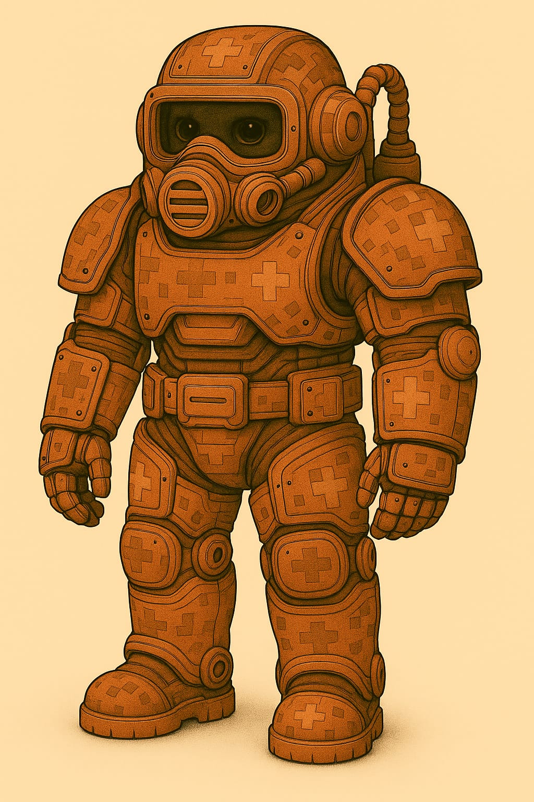
🧰 Allgemeines
Der Kadettenanzug "Typ K-1R" ist ein leichter Ausseneinsatzanzug für Nachwuchspersonal und Schulungseinsätze ausserhalb der Stationen. Er schützt zuverlässig vor Staub, UV-Strahlung, Kälte und dünner Atmosphäre – bei hoher Bewegungsfreiheit und robuster Konstruktion. Der Anzug ist für angeleitete Expeditionen unter Normaldruckbedingungen konzipiert und entspricht den kolonialen Sicherheitsstandards für Kadettenausbildung.
📡 Einsatzprofil
- Zielgruppe: Kadetten in technischer oder operativer Ausbildung
- Verwendung:
- Geführte Expeditionen auf der Marsoberfläche
- Ausbildung im realen Aussenumfeld (z. B. Sensorwartung, Topografie, Navigation)
- Wartungsbegleitung, Orientierungsübungen
- Einschränkungen:
- Nicht vakuumdicht
- Kein integrierter Funk
- Nur mit zugelassener Filterkassette verwendbar
- Einsatz nur unter Aufsicht und mit Rückkehrfenster
👕 Anzug (Ganzkörper-System)
- Aufbau: Einteiliger, versiegelter Ausseneinsatzanzug mit zentralem Reissverschluss, Isolierkern und Kreuzgurtsystem
- Material: Dreilagige Mars-Polyfaser mit Staubschutzoberfläche und temperaturregulierender Innenstruktur
- Tragesystem:
- Brustgurtführung zur Helmbefestigung
- Breiter Gürtel mit Nottrennverschluss
- Befestigungszonen:
- Keine Taschen
- Stattdessen Superhaft-Klettzonen an Oberschenkeln, Unterarmen und Gürtelbereich
- Zur Aufnahme von externen Ausrüstungsmodulen, wie Werkzeughalterungen, Lichtquellen oder Kartenträgern
🥾 Stiefel
- Typ: Halbhohe Aussendienststiefel
- Versiegelt, isoliert und antistatisch
- Flexgelenke zur Unterstützung langer Märsche
- Staubresistent und trittsicher auf losem Gelände
Atemschutz – Standardfiltersystem
- System:
- Kein Leichtatmer-Modul
- Standardisierter Frontanschluss für Filtrationskassetten
- Kompatibel mit Kolonie-Kassetten Typ S (Feinstaub, Gas, Partikel)
- Sichtbare Filteraufnahme mit modularer Einschuböffnung
- Wartung:
- Kassette werkzeuglos wechselbar
- Einsatzdauer je nach Belastung 4–8 Stunden
Helm (abnehmbar)
- Typ: Kuppelhelm mit mechanischer Verriegelung
- Schutz gegen Partikel, Lichtreflexion und Unterdruck
- Aufsetzbar über Bajonettverschluss
- Kein Funk integriert – nur passive Helmform
🎒 Zusätzliche Ausrüstung
- Rückensystem:
- Leichter Ausrüstungsbehälter mit Rollmatte
- Modulaufnahme für Trinksystem, Nordweiser, Ersatzkassette
- Gurtmontage mit Fixierungspunkten
Filter
Aktivkohleeinsatz Typ R-Filter/3K
Der Aktivkohleeinsatz Typ R-Filter/3K ist ein wiederaufbereitbares Filtermodul nach Interstellarer Norm (IN) für Mars-Einsatzanzüge. Es dient der atmosphärischen Luftreinigung bei Ausseneinsätzen unter Marsbedingungen und ist direkt im Anzug (Brust- oder Kragenbereich) verbaut. Der Einsatz ist austauschbar und wird nicht entsorgt, sondern über das Materiallager zur Regeneration zurückgeführt. Er ist kein Bestandteil eines Leichtatmers, sondern integraler Bestandteil des Anzugsystems.

- Informationsblatt: Aktivkohleeinsatz – IN-genormtes Filtermodul für Mars-Einsatzanzüge
- Code: F-IN-KEIN-INT-2.1
- Verwendung in: Kadetten-Ausseneinsatzanzügen (z. B. K-A_E-BASIS-KEIN-1.1) und regulären Ausseneinsatzsystemen (z. B. R-A_E-VERST-KEIN-2.0)
Verwendungszweck
Das Filtermodul reinigt die einströmende Atemluft und schützt zuverlässig vor Staub, Mikrofasern, Gasrückständen und Feinstaubpartikeln in Marsumgebung. Es wird in allen Ausseneinsatzanzügen für Kadetten und Regulärkräfte eingesetzt, sofern keine externe Versorgung erfolgt.
Gehäuseform & Material
- Aussenmasse: ca. 6 × 8 × 1.5 cm (L × B × T)
- Form: Rechteck mit abgerundeten Ecken, leicht asymmetrisch, angepasst an den Brustbereich
- Obere Frontfläche mit eingelassener Wabenstruktur zur Luftaufnahme
- Untere Hälfte mit zwei Luftführungsschlitzen, tief eingelassen
- Seitlich rechts: Arretierknopf für Klick- oder Bajonettmechanik
- Rückseite glatt mit Nutführung zur Verankerung im Anzugsystem
Materialien
- Gehäuse aus eloxiertem Aluminium oder stossfestem ABS-Kunststoff
- Dichtung aus umlaufender Silikonlippe für luftdichte Abdichtung
- Farbgebung: Standard dunkelgrau matt, Wartungsversionen silber eloxiert
Belastbarkeit
- Temperaturbereich: –30 °C bis +80 °C
- Kratz- und stossresistent, staubabweisend
- Gehäuse rückseitig beschriftbar, z. B. mit RFID oder Serien-ID
Filteraufbau (von aussen nach innen)
- Vliesvorfilter gegen Grobstaub, Sand, Fasern
- Aktivkohleschicht ca. 1 cm, gesintert oder granuliert
- Trägervlies zur Stabilisierung der Kohleschicht
- Dichtung aus umlaufendem Silikon für dichten Sitz im Gehäuse
Austausch & Regeneration
- Einsetzen erfolgt durch eine seitlich entriegelbare Frontklappe
- Mechanik: Klickverschluss oder Bajonettverriegelung
- Wechselzeit je nach Belastung: Standard 6–10 Stunden, bei hoher Staublast 4–6 Stunden
Wartungslogik
- Nach Gebrauch wird der Filter nicht entsorgt
- Er wird an das Materiallager zurückgegeben
- Dort entweder mit neuer Aktivkohle befüllt oder vollständig ausgetauscht
- Alle Module sind RFID- oder seriennummernüberwacht
Herstellung von Aktivkohle (praktikabel im Feld)
- Rohmaterial: Hartholz, Bambus oder Kokosnussschale, trocken und zerkleinert
- Verkohlung: In geschlossenem Blechbehälter mit Luftloch über Feuer erhitzen, 2–3 Stunden
- Aktivierung: Mit heissem Wasserdampf oder Salzwasser tränken und erneut auf 700–900 °C erhitzen
- Ergebnis: Poröse, hochreaktive Aktivkohlestruktur
- Verwendung: Gesiebte Kohle trocken lagern, luftdicht verpackt zur Regeneration einfüllen
Zusatzfunktionen (je nach Version)
- Farbfenster zur Verbrauchsanzeige (z. B. Verfärbung bei Sättigung)
- CO₂-Zusatzschicht, z. B. Lithiumhydroxid
- RFID-Modul zur Laufzeitprotokollierung und Serienverfolgung
Prototyp Terra
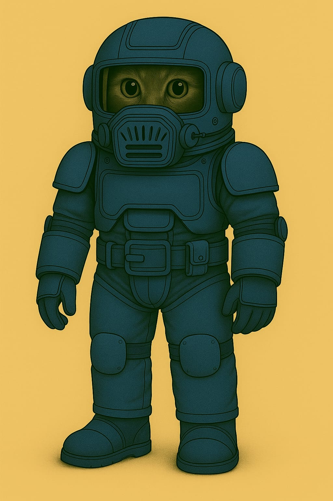
Scuba
Für Tauchgänge in Wasserseen und Wasser-Flüssen.
Kleiner Scuba

Tiefen-Scuba
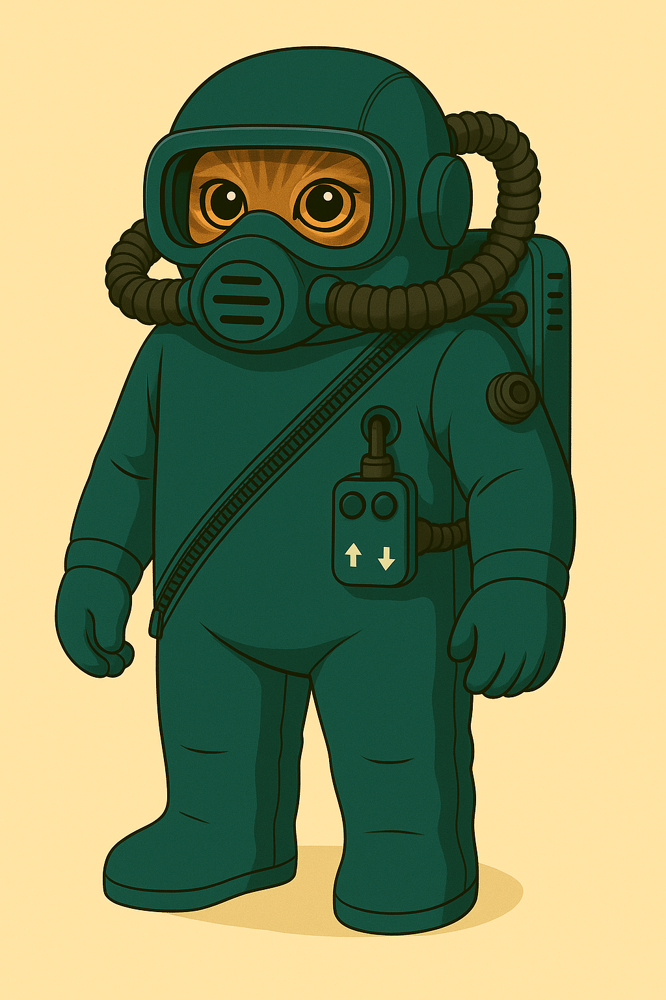
Atemgerät für Tiefen-Scuba
Dieses Atemgerät basiert auf einem Kreislauf. Man nennt es auch "Kreislauftauchgerät". Ein Kreislauftauchgerät oder Kreislaufatemgerät reinigt die ausgeatmete Luft, um diese danach wieder mit Sauerstoff anzureichern. Dies ermöglicht lange Tauchgänge, denn weniger Atemgas wird verbraucht.
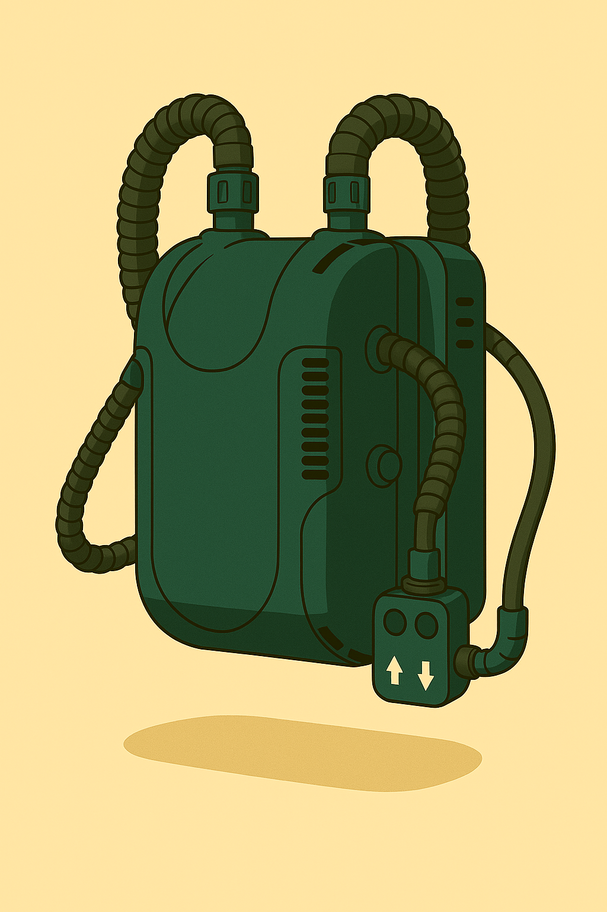
Raumanzüge und Anzüge in Raumschiffen
EVA für Ausseneinsätze im Weltraum
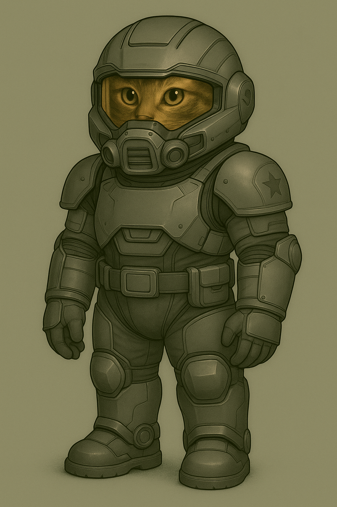
EVA/Bord-Anzug, kombiniert mit Helm nach Mars-Standard
Bei bevorstehenden Kampfhandlungen und Not Situationen bei denen autonome Luftversorgung nötig ist.
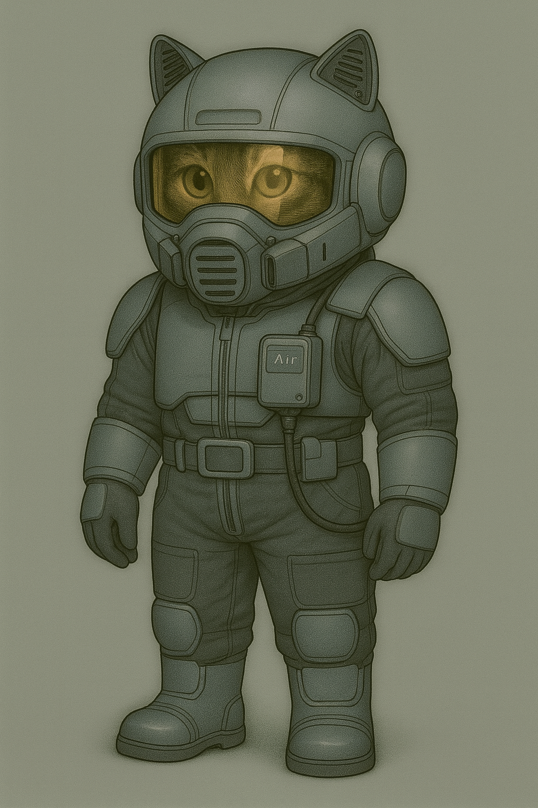
Bord-Anzug - kombiniert mit IIN-Helm
Bord-Anzug, hier kombiniert mit IIN-Helm. Bei bevorstehenden Kampfhandlungen und Not Situationen bei denen autonome Luftversorgung nötig ist.
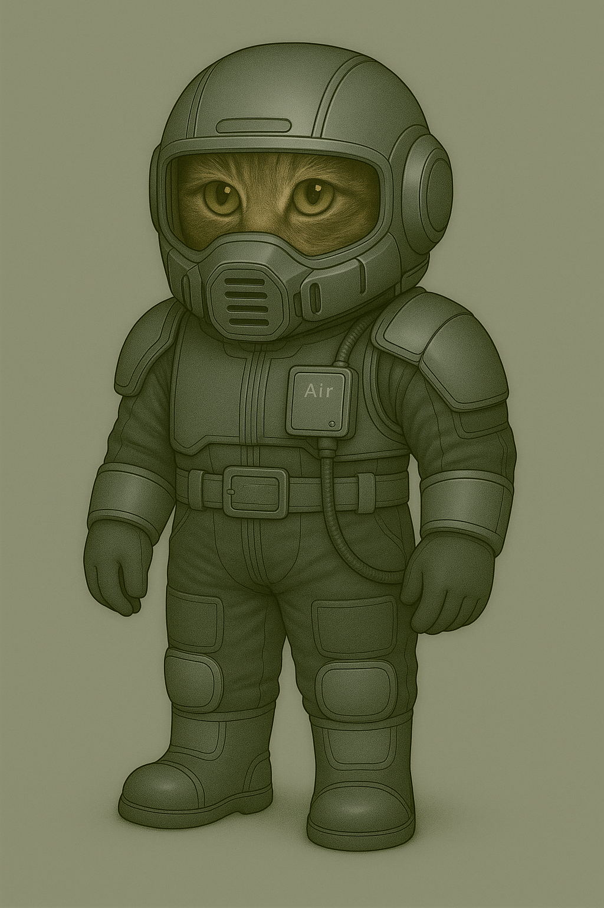
Bord-Anzug, bequem
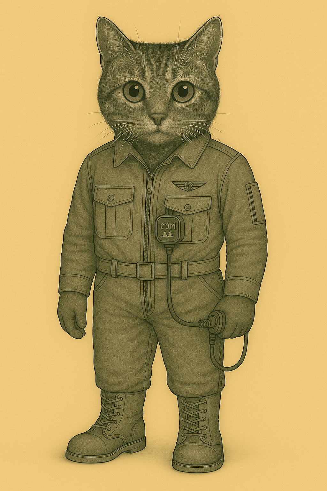
Arbeitsanzüge
[in Arbeit]